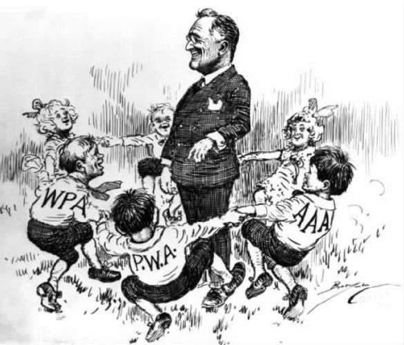

随着管控型资本主义在不同社会获得发展，它采取了不同的组织与制度形式，但在20世纪70年代的危机之后，资本主义的新自由模式在思想和意识形态领域占据了主导地位。这一模式看起来正推动所有的社会朝向新的以市场为基础的统一范式发展。这是否意味着资本主义在世界各地变得一模一样？抑或管控型资本主义的国际间差异一直存在，并保持了资本主义社会的多样性？本章将审视瑞典、美国、日本三种截然不同的管控型资本主义体系的发展与转型。
在上述三个国家中，瑞典的管控型资本主义更接近英国模式。和英国一样，瑞典有着强势的工人运动、高度发达的福利国家体系以及工业化过程中最少的国家干涉，不过相比英国，瑞典在发展有效运作的管控型资本主义方面更为成功。
瑞典进行工业化时的社会环境与英国相差甚远。瑞典的工业化开始较晚，因为瑞典人口不多，国内市场很小，又没有海外帝国的市场及资源。因此，瑞典工业依赖出口，要想存活就必须具备高度竞争力。事实上，有论者提出，竞争压力迫使瑞典的工会和雇主通力协作，这就解释了“劳工和平”现象，后来瑞典以此现象而闻名。
这种观点不合实际，因为在瑞典工业资本主义的早期发展中存在着激烈的阶级冲突。1909年，瑞典的一场大罢工持续了5个月，而1926年，英国的一场大罢工仅仅持续了一个星期。相比之下，英国的这次罢工更像是一场展示绅士风度的板球比赛。导致1909年大罢工的原因是不断升级的冲突，因为劳资双方都在扩张势力以求压倒对方。在工会中，社会主义者起到了重要作用，在瑞典工业化的特定背景下，他们创造了工人阶级强大、统一的工会组织。瑞典雇主们对此的反应则是建立权力高度集中的全国雇主联合会，它迫使工会也采取相应的集中措施。瑞典社会普遍信奉路德派新教，不存在民族分歧和宗教分歧，个人主义思想的影响力薄弱，这一社会现状或许有利于产生强势的阶级组织，但背后的驱动力还是阶级冲突。
阶级合作源自阶级冲突。强势组织的发展使得瑞典有可能坚定地采取管控型资本主义的统合形式，绝大部分管理被委派给中央组织。20世纪50年代和60年代，英国政府竭力想让全国性的工会组织和雇主承担起限制工资的责任，而瑞典政府却只需把这个任务留给这些组织去主动完成。事实上，瑞典获得“劳工和平”的声誉，主要原因在于这些强大的组织对于其会员所施加的控制。因此，正是瑞典国内激烈的阶级冲突为有组织的阶级合作以及和平的劳资关系创造了条件。
强势且统一的工人组织也为社会民主党从1932年到1976年的长期执政奠定了基础。该党在30年代采取措施缓解了失业压力，并且较早采取了凯恩斯主义的政策，由此奠定了声誉。后来该党还以高税收和累进税制作为资金来源，创建了先进的、广泛的福利国家体系。
国家福利只是工人运动集体政策的一个方面。它还通过“团结一致”政策，努力消除不平等。“团结一致”政策显著缩小了工资差异，在20世纪60年代和70年代，高收入者和低收入者的平均水平差距减少了一半。在70年代，政府还广泛立法，保护劳动者在劳动场所的权利，使其在公司政策制定时获得发言权。这样的政策并非仅仅出于意识形态需要，还是社会民主党策略的一部分——通过在包括工人阶级和中产阶级在内的全体员工中建立共同利益和身份，以增强工人运动的组织性和政治力量。
所有这一切并不意味着社会民主党统治下的瑞典正变成非资本主义社会。工人运动的领导者意识到，福利不仅仅取决于社会主义思想和工人阶级组织的力量，也取决于处于动态变革之中的资本主义经济体的运作，它必须能参与国际竞争，并扩大国内市场的容量。瑞典经济政策的核心原则之一就是无法赢利的公司应该被准予破产，它的资源从而可以被转移到其他能够赢利的经济部门。在这方面，瑞典工人相比英国同行受到的保护更少；在英国，政府会介入并拯救陷入困境的公司。而且，工会控制的劳动力市场政策并没有保护工人待在同一工作岗位，而是对其进行再培训，帮助工人变得更具流动性。
瑞典的经验表明，社会民主党创立的福利资本主义制度切实可行，瑞典回避了撒切尔主义这一事实也证明了这一点。20世纪70年代，瑞典的工业冲突加剧，并面临着经济危机。事实上，当时个人主义思想在瑞典势力渐长，并且在政治上转向右翼，1976年至1982年间出现了六年的“资产阶级”政府，这一切看似与英国的情况相近。但是，瑞典的右翼早已分裂为三个党派，无法有效合作以执行撒切尔式的转型。随后社会民主党重新执政，经济形势也开始好转，这一切似乎表明瑞典模式经受住了考验。
这不过是幻觉，因为瑞典模式最核心的统合协作现在已经处于崩溃状态。中央集权化的组织造成了自身内部的紧张关系，不仅在中心与边缘之间，而且在劳动力的不同部门之间也是如此。随着白领和公共部门员工人数的增长，中央集权的工会组织不可避免地将这部分人员也包括进来，由此产生了各种强大的组织并相互竞争，而瑞典式的工资协商所采取的集中化结构无法控制这些竞争，甚至可以说反倒加剧了竞争。集中式的工资协商耗费更多时间，变得更复杂，冲突更多。在这个过程中，瑞典的雇主们彻底疏离了中央合作制度。
另一些变化同样造成了他们的疏离。在20世纪60年代，工人们对瑞典不断变革创新的资本主义制度对于他们的工作岗位与工作条件所产生的冲击非常不满。业已消沉的激进主义重新浮现，要求在工业及经济领域内实现更多民主。这一思想在别出心裁的麦德纳计划里体现得最为淋漓尽致，它试图将工业所有权逐步从私人资本手中转移到由工会所控制的基金名下，不过最终立法通过的版本经大幅度篡改，失去了激进本色。社会民主党的领导层不想破坏推动瑞典经济增长的资本主义引擎。不过，这个计划还是对工人组织与雇主间的关系造成了严重破坏。
建立于20世纪30年代的劳资双方争端解决机制就此终结。在80年代，主要的雇主组织展开了一场大范围的反击，重新提倡个人主义及资本主义社会的价值观。为去除工资协商中的集中化方式，回归个人主义，雇主们发起了一场运动。1990年，雇主们最终退出了曾经帮助缩小工资差异的集中式工资协商。他们的策略从以统合的方式在政府机构中体现他们的利益转为更多使用政治影响和游说。统合主义在瑞典逐步瓦解，不过与英国的情况不同，这一转变在瑞典是由雇主们而不是由一个资产阶级政党完成。
20世纪80年代后期，当瑞典政治朝新自由主义方向发展时，瑞典社会已经出现了有限的重新市场化。福利资本主义制度催生了大规模的公共事业、高额的公共支出、高额的政府财政赤字以及具有通胀倾向的工资协议，这些显然减弱了瑞典的竞争力。商业领袖们警告说，除非做出改变，否则他们将不得不将业务迁出瑞典，而社会民主党的领导层也意识到，工业竞争力正在减弱。汇率控制被解除，金融市场管制被取消，私人资本被引入国有行业，地方政府的服务越来越多地由商业机构提供，福利和政府开支被削减，税收更多地改为间接税的形式。
20世纪90年代早期，大难来临。80年代累积的经济危机终于到来，国民生产总值在1991年至1993年间减少了5%，而失业率则蹿升到自30年代之后从未有过的水平。社会民主党无法应对危机，于1991年大选时落败。随后开始了由瑞典最右翼政党执政三年的“资产阶级”政府。这意味着进一步削减福利，并在社会服务方面引进更多的市场机制。当社会民主党于1994年重新执政时，也不得不削减福利开支以应对高额的政府赤字。在20世纪80年代，许多人认为瑞典的例子证明，社会民主党的选择依然是可行的，但是90年代初的情况似乎说明，这一选择行不通。
关键问题是怎么来比较。如果将21世纪初的瑞典与20世纪60年代和70年代的瑞典相比，那么毫无疑问，强调集中化合作、福利资本主义以及促进平等的“瑞典模式”已经衰落。和其他社会发生的情况一样，在20世纪80年代，瑞典开始出现越来越多的不平等状况。但如果将瑞典的资本主义与同时代其他地区的资本主义制度相比较，你会发现有许多非常重要的差异，其中一部分差异还在加剧。
集中化的工资协议不复存在，但取代它的是雇主与工会团体间达成的行业性协议，这表明瑞典的工资协商依然是经过高度协调后达成的。工会入会率已经下降，但在国际范围内依然高得惊人。2003年初，有81%的员工加入工会，与之相比，英国在近几年的入会率只有约30%。瑞典与英国之间的差距事实上在拉大，因为英国的入会率下降速度远远超过瑞典。
瑞典的福利国家特征依然鲜明。经济合作与发展组织对于国家福利的总体测算显示，1981年，英国与瑞典大致处于同一水平，随后在80年代，随着英国对福利进行大幅削减，而瑞典尽管 有所削减，但大体保持原状，两国间拉开了巨大差距。杜文·斯旺克回顾了近期关于瑞典福利国家制度所做的研究，他的结论是，“瑞典的福利国家制度与其他奉行新自由主义政策的国家的制度相比，即使有重合之处，也不会有很多”。
而且，瑞典的做法没有遵循新自由主义模式，却与本国的经济复苏和切实可行的资本主义制度相适应。20世纪90年代初，瑞典的确经历了艰难的经济危机，但此后经济就开始复苏。失业率从90年代初的超过10%降到2001年的4%。2002年经济合作与发展组织所作的“瑞典经济调查”得出结论，“总体而言，经济运行良好”。
那么，关于资本主义，瑞典的例子究竟告诉了我们什么？它表明，在某些情况下，资本主义所产生的劳资冲突可以为集中化的阶级合作以及统合管理与福利资本主义的运行体系提供基础。它还表明，这样的体系最终无法抑制劳资双方之间以及不同产业劳动力之间的冲突，最终这些冲突将导致该体系的瘫痪。日渐激烈的国际竞争和全球经济一体化使得这样一个高成本的体系无法维持。资本主义经济危机被推迟，但无法避免，瑞典在一定程度上 不得不遵从国际性的新自由主义趋势。但是，所有这一切并不意味着，在管控型资本主义时期所建立的结构和制度都将消失。瑞典式资本主义的复兴并没有消除它的集体主义特色，这一特色保持至今，并且证明它可以与经济增长相适应。
美国式资本主义具有鲜明的个人主义特色，就意识形态和组织形式而言，处于另一个极端。美国的工业化发生在一个权力分散、个人化的社会里，这里的民众普遍相信，依靠进取心和积极性能取得成功。美国不存在贵族阶层，18世纪的美国革命所确立的政治和民事权利激励了这样的信念。工业资本主义的兴起确实导致了工会的出现，但这些主要是只关心自身利益的手工匠人的组织，它们不关心阶级组织或者整个社会的社会主义式转型。
在这种背景下，商业股份业公司取得了繁荣，孕育出公司型资本主义，而不是统合型资本主义。在其中，商业股份公司，而不是阶级组织，起到了主导作用。巨大的美国国内市场支撑着大型公司的发展，到了19世纪晚期，相比其他国家，美国产权集中化的程度更高。起初，集中化采取“水平”兼并的形式（比如洛克菲勒家族的标准石油公司）以操控市场。但是，到了20世纪，成为主宰形式的是“垂直”一体化公司，它将一个产品生产和销售过程中的各个阶段都集合在一起，从而在竞争中确立牢固、稳定的地位。
美国是“管理革命”理论的发源地，第三章对此已作过简略讨论。阿尔弗雷德·钱德勒令人信服地提出，美国公司的经理们在公司发展期间被允许“将工作进行到底”，这很大程度上源自他们杰出的“组织才能”，尽管这种说法低估了公司所有人的权力。钱德勒将美国式管理与英国公司的所有制作了比较。美国公司总是将利润用于进一步投资与发展，而英国公司的产权方式更为个人化、传统化，它们更关心股东的分红，而不是长期投资。
与商业公司的集中化相呼应的是美国工会理念的鲜明特色。这主要是一种“商业工会理念”，它关心的不是社会转型，甚至也不是作为整体的劳动者的集体利益，而是为工会成员争取最有利的合同。这不仅意味着高工资，而且也包括额外福利，如带薪休假、保险和医疗。二战之后，这种理念更为明显。商业工会理念不仅反映了商业股份公司在美国的主导地位，而且也折射出美国工人阶级内部的分歧。美国工会理念代表着白人男性劳动者的利益，它被富有阶级意识的、体现社会主义思想的欧洲工会视为一种叛离形式。美国的工会入会率在巅峰时也仅仅只有1/3，到了20世纪50年代已开始下降，尽管在20世纪50年代和60年代，工会还能做到按照会员的意愿行事。
正如附加福利的重要性所显示的那样，一些在欧洲由政府负责提供的福利，在美国则是由公司提供。的确，“福利资本主义”一词，通常被用于描述不断变革的资本主义制度与先进的福利国家制度的结合，但是在美国，它指的却是公司的福利措施。这并不是说，美国不存在国家福利的发展，但美国的国家福利仅仅为穷人提供零星的保护，真正的福利则是公司或个人的责任，并由私人服务通过市场机制完成。
如果认为美国的个人主义思想和自由市场意识形态将国家排除在经济生活之外，这种想法同样是错误的。恰好相反，商业公司的垄断倾向意味着，如果想要维持竞争并保护消费者利益，那么经济生活就需要管制。19世纪晚期，“反托拉斯”运动出现，1890年的《谢尔曼法案》宣告任何“限制贸易或商业”的行为或组织非法。这并没有阻止拥有强大实力的公司继续发展，但这些做法的确造成了一定的影响，尤其是迫使标准石油公司解体，并且也产生了一整套具有美国特色的专用于反托拉斯立法与执法的国家机器。国家介入经济生活的原因，并不是像欧洲那样为了阶级斗争，而是为了维护竞争。
20世纪30年代，美国的政府干预看起来更接近欧洲的做法。为了应对大萧条，富兰克林·罗斯福的“新政”设立了雄心勃勃的救济和福利方案，并最终采取了凯恩斯主义的经济政策。“新政”与大公司在以下几个方面陷入了严重冲突：“新政”的税收提案、“新政”提供的廉价电力供应（部分通过国有的“田纳西流域管理局”）、“新政”继续对垄断趋势进行的“反托拉斯”攻击与“新政”立法保护工会的举措。
政府授予工会组织和集体协商的权利，政府还组建了“全国劳动关系委员会”以贯彻这些权利。随着“产业组织委员会”确立了更具包容性的工会理念，并对美国的大规模生产行业加以组织，在1933年至1938年间，工会成员人数增加到原来的三倍。1938年，政府通过进一步立法，对工资和工作时间进行管制，并保护弱势团体。
美国政府的联邦制，以及权力在总统、国会和最高法院三者间的分割，给了反对派许多机会阻止或妨碍“新政”措施。此外，虽然“新政”推出了一大批机构和方案，但是它缺乏一致性，至少与欧洲各国更具意识形态色彩的方案相比缺乏一致性。“新政”依赖罗斯福以及一大批改革者和管理者所付出的辛苦努力与精力，他们具备良好的意图和充足的动力，但是缺少一个改革派政党来支持“新政”，并将“新政”推向前进。作为罗斯福的政治基地，民主党的确与工会结成了同盟，并支持国家福利方案，但它并不是“工党”，党内有些人对工会和“新政”持有敌意。

图8“围绕着罗斯福”：“新政”遗留的机构围着他跳舞
1947年颁布的塔夫特-哈特利法案大幅度削弱了工会的力量和权力，从而部分地废除了20世纪30年代对劳工有利的立法。国会不顾罗斯福的继任者哈里·杜鲁门的反对，通过了塔夫特-哈特利法案，这也说明了缺少政治臂膀的工人运动的弱点。在20世纪50年代，美国的工会组织已经面临着对于它们行为的种种限制，而英国的工会直到80年代才遭遇类似限制。
在其他方面，“新政”之下的管控型资本主义在20世纪50年代和60年代继续运行。30年代引入的社会保障立法和福利方案在50年代和60年代进一步扩展，特别是给予了穷人和老人享受免费医疗的福利。一直到70年代，在理查德·尼克松的总统任期内，联邦政府才开始尝试对价格和收入进行控制。赤字财政继续推行，不过不仅仅是因为凯恩斯主义经济学成为新的信条，而且也是因为二战和随后的冷战造成了巨额的军费开支。工业领域中相当一部分部门的赢利能力，以及劳动力的就业和收入，取决于政府开支。在美国，由政府引导的产业政策并不受人欢迎，但正如戴维·柯茨所说，军事与工业联合体的创建事实上就是这样一种政策。商界反对政府干涉，却接受政府资金。
尽管美国工业相比英国工业更具竞争性，但在20世纪60年代晚期和70年代，美国工业同样陷入了困境，原因在于沿袭的僵化体制和加剧的国际竞争，尤其是来自日本的竞争。美国的工会组织理念、国家福利、国有产权都处于低水平，这意味着相比英国，美国所面临的转型压力较小。美国向撒切尔主义的转变已经完成了一半，但还是有一半路要走。美国同样经历了一段转型过程，尽管速度较慢，并且一路上不断停顿，偶尔还走回头路。
在20世纪80年代和90年代，美国社会同样经历了重新市场化。凯恩斯主义被废弃，政府开支被削减，一部分工业被解除管制，一部分服务改为私有化，国家福利也被削减。20世纪70年代的通胀使凯恩斯主义政策名声扫地。80年代初，里根政府试图通过同时削减税收和政府支出来刺激市场，不过利益集团抵制对政府开支进行削减，并且减少预算赤字是一个缓慢的过程。航空业率先解除管控，这标志着与“新政”所倡导的行业管制传统相决裂，随后铁路、公路货运、电信、电力等行业纷纷解除管制。铁路的国有部分，以及许多国营的地方服务机构和监狱，都转为私有。一项“从福利到工作”的方案成为了英国新工党效仿的对象，它限制了福利支付的持续时间，并迫使接受者从事低收入的工作。
和英国的情况一样，这些变化伴随着劳动力剥削的进一步加剧：工作强度加大，实际工资降低，工会力量削弱。20世纪80年代，工人们的工作时间延长，实际工资以每年1%的速度下降。工业企业将工厂向南方迁移，从北方的“旧工业地带”转移到南方的“阳光地带”，随后又进一步南移到墨西哥，以寻求更为廉价的劳动力。原有的精英主义的“商业工会”关心的是满足其现有会员的切身需要，如今这些工会要么在组织新的劳动力时遭到失败，要么干脆就无法（在墨西哥）进行组织。到2001年，工会入会率降到只占全部劳动力的13%，这是一个相当低的数字。不平等现象加剧，过着贫困生活的劳动者从20世纪70年代的约2，500万增加到2002年的约3，500万。
随着20世纪初的“管理革命”遭到逆转，在管理层也发生了同等重要的变化。资本流动性加强，股票市场投资变得普遍，金融服务业得以扩展，这些变化使公司的市场估价变得更为重要。根据近来流行的“股东利益”信条，企业管理的目标不再是对未来进行投资，加强公司建设，或平衡各方利益，而是通过增加利润以达到股票价值的最大化。作为对提升公司股价的奖励，经理们得到了股票期权，以激励他们进一步努力。一定程度上，管理革命曾将管理层与公司所有人分离开来，但现在他们日渐成为了公司所有人的一部分。
从20世纪80年代中期到90年代晚期，对劳动力的进一步剥削以及对股东利益的强调，提高了公司利润。经济有所增长，但并没有持续太久。经济增长的大部分动力来自信息和通信技术的迅速发展，但技术繁荣终究会停止。到90年代晚期，出口减少，经济增长依靠国内消费需求的增长来维持，而这部分需求的资金来源于一股借贷消费的热潮，它注定无法长期维持。公司及投资者对于股票价格的痴迷孕育出一种泡沫心态，它推动价格上涨到与收入和利润不相匹配的水平，造成民众对于他们的财富产生了错觉，随后当泡沫破灭时又突然将他们打回原形。不顾未来发展只盯住短期股价的做法，导致安然和世通公司以及华尔街先后闹出金融丑闻，这些丑闻影响了投资者的信心，一味追求股东利益的行为也遭到了质疑（参见第六章）。
20世纪90年代，业界对于美国模式的优点充满信心，如今这些信心业已基本消散，未来充满不确定性。更多的政府开支，以及在伊拉克不断增长的军事费用和重建开支，加上税收削减和更低的利率，或许能抑制经济衰退，甚至促进部分经济复苏。但是，出口减少，政府开支增加，国内消费居高不下，这些情况造成了高额的国际债务、公共债务和私人债务。这些债务，连同更高的失业率和上升的贫困率，为将来的危机埋下了隐患。
从一开始，美国资本主义的特征就是信奉个人主义和市场力量，但是美国资本主义的发展，和其他地区的资本主义一样，造成了劳动力的集体性组织、公司的集中化以及大范围的国家管制等现象。美国的管控型资本主义不同于英国和瑞典的同类制度。在美国，集体组织的影响范围较小，国家福利不够普遍，反托拉斯立法更为发达。但无论怎样，美国的确经历了这一阶段。
美国资本主义的当前阶段反映了其历史特性，但它不仅体现了美国资本主义所拥有的某些特点，它也是美国社会自20世纪70年代危机之后重新市场化的结果。相比世界其他地区，美国资本主义在重新市场化的过程中所遭遇的阻力更小，阻挠更少，并产生了更强势的经济增长，但与此同时美国也出现了最终破灭的经济泡沫，并造成了严重的经济与社会问题。近期出现的经济复苏看起来很脆弱，美国经济在20世纪末的成功很可能会引发21世纪初一场新的危机。
日本式工业资本主义从一开始就属于管控型。到19世纪中期，日本已经是一个高度商业化和企业化的社会，但是还没有实现工业化。在19世纪的明治维新之后，工业化作为整个国家战略计划的一部分由政府引导进行，其目的在于建设一个强大、独立的国家，能抵抗正在入侵日本的西方列强。西方的个人主义和自由主义对于一些知识分子和政策制定者来说颇具吸引力，但对于日本的新统治阶层来说则相当陌生，这些统治阶层的成员都是民族主义官僚，接受的是日本式的儒家教育。
新政府实现日本工业化的最知名的办法之一就是建立样板国有企业，但这些企业并非总能获得成功。一些企业，如八幡钢铁厂，对于工业化过程起着至关重要的作用，但另一些则管理混乱，效率低下。因此，正如弗兰克·提普顿所指出的，国有棉纺织厂选择进口只能带动2，000个纺锤的水力机械，却没有投资购入能带动10，000个纺锤的蒸汽动力机械，后者可以由技术熟练程度相对较低的工人来操作。国有企业陷入困境，到19世纪80年代，政府只得将那些不具备军事意义的企业改为私有。
但是，私有化并不意味着日本的工业可以被视为独立的私人公司。日本工业化的特征之一就是出现了被称为“财阀”的大型企业集团。有四大集团：三菱、三井、住友、安田。这些集团均为家族所有，家族通过控股来对其加以控制。在所有的工业社会都出现了公司集中化，但在日本，这一过程采取了一种特殊形式，每个财阀的经营范围几乎涉及日本的整个工业，它们拥有自己的银行，有营销自己产品的贸易公司。财阀与政府关系密切，到最后还为政府完成重要的殖民掠夺。
样板企业并非政府推动经济发展的最主要方面。政府消除了原本可能妨碍经济发展的封建障碍与限制，创造了一个现代民族国家。日本首次成为统一的国家，对铁路和船运业的大笔资金投入改变了交通的方式。造船业也同样得到大量资金投入，到1939年，日本的船舶产量仅次于英国。国家还创立了银行体系，对投资和贸易提供资金支持。起初日本尝试了美国式的私人银行，但随后改为创办欧洲式的央行和专业银行，以满足经济不同部门的需求。
最终，政府保持了日本的经济独立。日本曾引入许多外国专家，但他们随即被新式教育机构所培养的本土技术人才所取代。在日本成为强大的独立国家之前，外国资本一直被摈除在外。事实上，是日本的农民阶层负担了日本现代化的主要成本，他们所缴付的土地税最初占到政府收入的3/4。日本也开始建立海外帝国，以求获得受保护的市场及原材料。
日本是19世纪唯一成功进行工业化的非西方社会。它创造了特色鲜明的管控型资本主义，在其中政府扮演指导性角色，而公司的集中化采取了涵盖整个经济体的工业集团形式。另一鲜明特征是劳动力组织的软弱。事实上，工人们试图组织起来，并在工业繁荣、需要大量劳动力的一战期间取得一定成功，但工人的努力遭到了雇主的强烈反对和政府的镇压。国家福利也不发达，部分是因为雇主宁愿采取公司福利机制，将工人与公司结合在一起，从而使工人脱离工会组织。
二战之后，日本经济的上述特点得到进一步发展，当时日本的发展机器开始启动，使日本成为世界第二大经济强国。查尔莫斯·约翰逊指出，战败消除了军事干涉和财阀的阻碍，事实上加强了国家引导经济发展的能力。财阀先是解体，后又重建，这主要是因为冷战导致以美国为主的占领政府改变了它的政策。和德国的克虏伯公司一样，三菱财阀如今变为了反共资源而不是法西斯的供给来源。重要的是，财阀的重建在日本通商产业省的支持下进行，该部门专职负责制定日本的产业政策，它利用财阀对贸易、货币和投资的控制来发展未来的产业。
重建后的财阀与其他相似的企业集团一起发挥了重要的经济功能。由于覆盖整个工业，它们为跨越行业界限提供协调，但它们也参与激烈的竞争，这些竞争刺激了生产率的提高，增强了日本的国际竞争力。它们可以采取以扩大市场份额为目标的长期政策，因为它们的重建建立在相互控股的基础上，并且由银行提供资金，从而缓解了股东们的压力，不必过分追求分红。这也意味着它们得到了保护，以免被国外资本或恶意收购者强行收购。此种所有权模式与公司内部的紧密结合有关，因为日本公司可以顾及员工利益，而不是寻求股东分红的最大化。
在美国占领日本的前几年，工会组织迅速发展，这一事实说明，日本的工会组织由于文化原因而没能壮大的说法并不正确。1946年1月，日本共有90万工会成员，但到了1949年6月，会员人数超过了650万。形成鲜明反差的是，即使在战前最高峰的1936年，工会也只有42.1万会员。起初，工会组织得到占领政府的鼓励，被视为“民主”组织，但在占领政府的政策从反法西斯转为反共的历史大背景下，工会的迅猛发展遭到来自雇主和政府两方面持续、猛烈的攻击。但是，很快雇主的策略就发生了改变，不再试图解除工会，而是用温顺的“企业工会”取代它们。在1953年的“日产之战”中，日产公司得到了日本雇主联合会的支持以及银行的金融支援，它挑拨原有工会举行罢工，随即采取停工的方式将工会成员排除在外，并建立起自己的日产工会，工人们只有加入新工会才能重新得到工作。随后企业工会成为常态。
日本公司与员工的结合度很高，这一点成为日本公司得以击败西方竞争对手的优势。公司提供终身的就业保障，工资随着工作级别和年限不断增长，提供各种福利，有时还提供住房。作为回报，雇员必须努力地长时间工作，如果公司有需要，雇员必须放弃周末和休假。其他结合措施还包括：公司内不存在地位区分，员工穿着公司制服，工人们与经理们在工作及休闲期间相互交流。与西方公司相比，日本公司内的收入差别非常小。
一部分员工与公司紧密结合在一起，代价是其他人被排除在外。合同工、临时工、女工，这些人受制于他们的身份类别，无法享受终身福利和所有随之而来的好处。这种情况也存在于那些依附于大企业的小型公司，它们与大企业签订了转包合同。与西方工业社会相比，日本小公司为大企业所做的工作更多。小公司是经济冲击的吸收器，大企业可以根据需求，控制劳动力人数，从而顺利度过经济震荡。在日本，与公司高度结合的终身制员工作为精英阶层，与那些可有可无的边缘雇员之间界线分明。
日本的福利体系中有一套极其重要的关联体系，在高度结合的制度框架内运作。日本只有基本的福利国家制度，这使得工人们高度依赖公司的福利机制，并强化了他们的服从性，但与此同时，国家福利的欠缺也促使日本民众未雨绸缪，为将来而储蓄。个人储蓄进入由通商产业省所控制的邮政储蓄体系，随后通商产业省又引导这笔资金投入它所选中用以投资的行业。
不可否认，日本具有成功的资本主义制度，其特性完全不同于我们所讨论过的其他资本主义制度。福利国家制度是瑞典式资本主义必不可少的一部分，但在日本模式中，福利国家制度的缺失却至关重要。国家的指导作用是日本经济的鲜明特点，一些评论者呼吁西方政府制定类似的产业政策。日本的公司所有权和银行资金模式与英美的股市模式形成反差。日本公司对于员工的掌控甚至比美国公司更为彻底，在美国，工会更富战斗精神。日本的公司福利也涵盖更多方面，罗纳德·多尔曾将日本式资本主义描述为另一层意义上的“福利资本主义”。
与我们所讨论过的管控型资本主义的其他体系一样，日本式资本主义在20世纪60年代晚期和70年代遭遇了困境，同时日本也承受了巨大的、持续的外部压力，被要求对外开放进行贸易。70年代初，中美恢复外交后，美国改变了对日本的看法。此时日本不再是对付东亚共产主义的堡垒，而是一个系统地采取不公平贸易手段的工业竞争者。尽管日本找到办法，用非关税壁垒替代关税壁垒（例如宣称英国的“兰翎”自行车不安全），但对于进口商品和资本的限制还是逐渐放开了。通商产业省的控制工具解体后，它不得不更多依赖在工业领域内发挥余热的退休官员所组成的广泛网络进行“行政指导”。
但是，日本在应对20世纪70年代出现的问题时，并没有放弃它原有的制度，就此走上新自由主义之路。为了维持经济增长和国际竞争力，日本将增长所积累的资本投到国外，利用更为廉价的劳动力建立海外业务，主要是在东南亚，但也包括欧洲、美国以及澳大利亚。通商产业省开展了一项新计划，发展以知识为基础的未来产业，日本很快成为世界领先的微晶片生产商。日本工业的竞争力如此强大，以致整个20世纪80年代美国对日本一直处于巨额贸易赤字，不过日本对于美国债券的投资将日本的一部分收入重新输回美国，为背负巨额赤字的美国经济提供了资金支持。
20世纪90年代初，所有这一切都变了。股票及土地价格涨到难以维系的水平，经济泡沫就此破灭。股市崩盘之后，紧随而来的是经济滞胀与高失业率。日本陷入了恶性的通货紧缩循环。随着失业率攀升，未来变得更加不确定，民众将更多的钱用于储蓄，消费者需求下跌，经济增长随之进一步衰退。问题不在于出口市场，许多日本公司在出口方面依然很成功，问题在于国内市场。政府应对危机的办法是增加政府开支，降低利率，但它们发现经济增长机器很难再度发动。
曾经促进发展的制度开始遭到批评。终身雇佣制被视为“僵硬的做法”，它妨碍了劳动力市场的自由运行，也使得公司难以削减员工。工业集团内部相互控股的做法也遭到批评，批评者认为这样做支持了那些亏损企业，也阻碍了新的资金从国外流入。银行被认为与工业集团关系过于密切，因此无法终结那些亏损企业。的确，许多银行陷入了严重的麻烦，因为它们贷出了太多资金给那些无力还债的投机者和经营失败的公司。经济增长不稳定，公司、银行、政党及官僚之间的腐败关联被揭露，这两方面因素使得“发展型国家”模式难以为继。在日本国内外都有人呼吁日本转向市场模式，他们声称，全球化的压力难以避免。
因此，日本处于日益增长的压力之下，它被要求允许资本更多地流动，解除对金融市场的管制。外国资本进入日本，一些挣扎中的日本公司被外国竞争者收购，如雷诺收购日产并进行资源重组。1996年，日本对银行与金融业解除管制，这被认为具有“大爆炸”式的影响，它给予日本资本更多自由，也方便了外国金融机构进入日本。之后，随着一些脆弱的机构失去保护，一系列的破产与资源重组开始了。然而，“大爆炸”一词并不确切，事实上出现的是一个缓慢的、不彻底的执行过程，根本无法与发生在伦敦的“大爆炸”相比。人们达成的共识是日本必须做出调整，而不是必须顺从。
日本式的制度能保留吗？在近来关于这些话题的讨论中，罗纳德·多尔按时间顺序记录了这一逐步变化的过程：主要的日本雇主联合会反思终身雇佣制，通过立法加强股东权力，努力构建与经营表现挂钩的薪酬体系，以及采取一些自由化的解除管制的做法。但是，多尔也多次就一些问题作出评论，包括：变革不够深入，变革遭到抵制与反抗，以及具有如此多内部关联的体系难免具有惰性。
事实上，日本最引人瞩目之处就在于它的稳定性，包括政治稳定性和经济稳定性。在20世纪90年代早期，看起来似乎自民党对于日本政坛的长期统治正在动摇，新的政治选择正在出现，但主要的反对党日本社会党当时却与自民党组成同盟，后者借此保住它的统治地位。之前惊人的经济增长速度没能保持，日本在90年代经历了许多经济磨难，特别是更高的失业率，但它当前的失业率依然低于经济合作与发展组织的平均值。世界第二大经济体免于遭受破产，尚未陷入萧条。如果你曾经经历过大规模经济增长，并且享受着很高的生活标准，滞胀或许并不是一个坏选择！人们不妨期待这一稳定性会将日本的制度保留下来。
图9卡洛斯·高斯恩，来自雷诺的日产公司首席执行官，宣布关闭工厂，1999年10月
要求日本社会市场化的压力或许也在减弱。20世纪90年代，股东式资本主义（当然是仿照了美国模式）一度大获成功，但正如之前提到的，在安然和世通公司的审计丑闻后，现在这一切笼罩上了一层阴霾，而在90年代晚期的泡沫破灭后，美国经济则显得很脆弱。那些试图抵制日本经济自由化的人现在有了证据来反击那些一直施压要求日本进行自由化转型的人。
我们已经审视了管控型资本主义的三种国家体系的形成过程，它们各自有着特色鲜明的组织与制度。在这三种体系中，资本主义工业化都产生了阶级组织和阶级斗争，政府也都尝试来管控资本主义社会的问题。三种体系各自创立了自己的“福利资本主义制度”，不过各个社会对这个词的界定不尽相同。
尽管每一个体系看似都以自己的方式解决了资本主义存在的问题，但三种体系都面临着20世纪70年代以来日渐严重的困境，部分原因在于世界经济出现的变化，但另一部分原因则在于它们各自的制度所造成的问题。三种体系都遭受了压力，迫使它们放弃管控型资本主义的做法，进行改革，允许市场力量获得更多自由。
这一切是否导致了各国间差异的减少？现在是不是只有一种征服一切的资本主义制度，而不是形形色色的资本主义制度并存？有充分证据表明，各国间差异继续存在。三种体系的确朝着相近的方向发展，但这一事实并不意味着它们就此趋同，它们并没有彼此靠近。如果三个人间隔一米站立，每个人向右移动一米后，他们之间的距离还是和以前一样！
必须抗拒三种体系不可避免地将趋于相同这样的想法，不仅因为这种想法是错误的，还因为它剥夺了我们的选择。这并不意味着，人们可以挑选自己所选中的任何类型的资本主义制度，因为每个社会的现存制度限制了人们的自由选择；事实上这意味着人们可以努力推动他们所处的特定的资本主义制度朝向他们认为合适的方向发展。认为市场力量不可避免地并且越来越多地在资本主义社会里压倒政治，这样的观点缺乏证据支持，因为对于多种资本主义制度的比较研究表明，这些截然不同的组织和制度结构在重新市场化之后依然存在，并且与运行中的市场机制完美匹配。